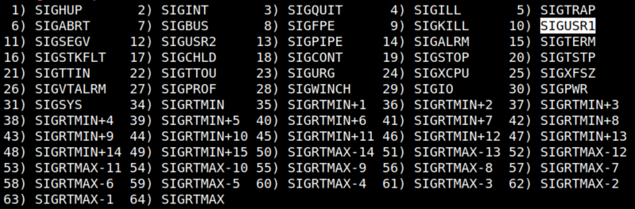
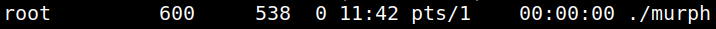
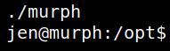

4.3 Signal kill
1. You can see a list of signals.
$ kill -l
Output:

As you can see "SIGUSR1” signal has the number 10.
You can kill a signal with the command kill -10 <pid of the murph process>.
2. Look for the proccess called “murph” and who owner is "root.
www-data@murph:/opt$ ps -ef |grep root |grep murph
•
-e and -f are options to the ps command, and pipes take the output of one command and pass it as the input to another. Here is a full breakdown of this command:•
ps - list processes•
-e - show all processes, not just those belonging to the user•
-f - show processes in full format (more detailed than default)•
command 1 | command 2 - pass output of command 1 as input to command 2•
grep find lines containing a pattern•
processname - the pattern for grep to search for in the output of ps -efOutput:

5. Kill the signal.
www-data@murph:/opt$ kill -10 600
6. Get back the shell into the foreground.
www-data@murph:/opt$ fg
Output:

You're now the user “jen”.